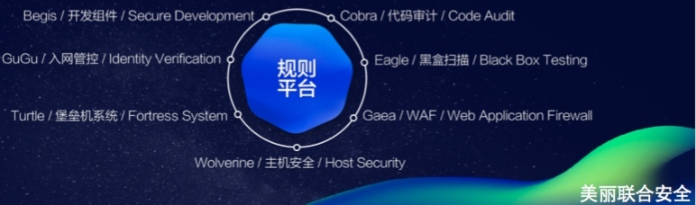

- 00 开篇词 带给你不一样的运维思考.md
- 01 为什么Netflix没有运维岗位？.md
- 02 微服务架构时代，运维体系建设为什么要以应用为核心？.md
- 03 标准化体系建设（上）：如何建立应用标准化体系和模型？.md
- 04 标准化体系建设（下）：如何建立基础架构标准化及服务化体系？.md
- 05 如何从生命周期的视角看待应用运维体系建设？.md
- 06 聊聊CMDB的前世今生.md
- 07 有了CMDB，为什么还需要应用配置管理？.md
- 08 如何在CMDB中落地应用的概念？.md
- 09 如何打造运维组织架构？.md
- 10 谷歌SRE运维模式解读.md
- 11 从谷歌CRE谈起，运维如何培养服务意识？.md
- 12 持续交付知易行难，想做成这事你要理解这几个关键点.md
- 13 持续交付的第一关键点：配置管理.md
- 14 如何做好持续交付中的多环境配置管理？.md
- 15 开发和测试争抢环境？是时候进行多环境建设了.md
- 16 线上环境建设，要扛得住真刀真枪的考验.md
- 17 人多力量大vs.两个披萨原则，聊聊持续交付中的流水线模式.md
- 18 持续交付流水线软件构建难吗？有哪些关键问题？.md
- 19 持续交付中流水线构建完成后就大功告成了吗？别忘了质量保障.md
- 20 做持续交付概念重要还是场景重要？看笨办法如何找到最佳方案.md
- 21 极端业务场景下，我们应该如何做好稳定性保障？.md
- 22 稳定性实践：容量规划之业务场景分析.md
- 23 稳定性实践：容量规划之压测系统建设.md
- 24 稳定性实践：限流降级.md
- 25 稳定性实践：开关和预案.md
- 26 稳定性实践：全链路跟踪系统，技术运营能力的体现.md
- 27 故障管理：谈谈我对故障的理解.md
- 28 故障管理：故障定级和定责.md
- 29 故障管理：鼓励做事，而不是处罚错误.md
- 30 故障管理：故障应急和故障复盘.md
- 31 唇亡齿寒，运维与安全.md
- 32 为什么蘑菇街会选择上云？是被动选择还是主动出击？.md
- 33 为什么混合云是未来云计算的主流形态？.md
- 35 以绝对优势立足：从CDN和云存储来聊聊云生态的崛起.md
- 36 量体裁衣方得最优解：聊聊页面静态化架构和二级CDN建设.md
- 37 云计算时代，我们所说的弹性伸缩，弹的到底是什么？.md
- 38 我是如何走上运维岗位的？.md
- 39 云计算和AI时代，运维应该如何做好转型？.md
- 40 运维需要懂产品和运营吗？.md
- 41 冷静下来想想，员工离职这事真能防得住吗？.md
- 42 树立个人品牌意识：从背景调查谈谈职业口碑的重要性.md
- 划重点：赵成的运维体系管理课精华（一）.md
- 划重点：赵成的运维体系管理课精华（三）.md
- 划重点：赵成的运维体系管理课精华（二）.md
- 新书 《进化：运维技术变革与实践探索》.md
- 特别放送 我的2019：收获，静静等待.md
- 结束语 学习的过程，多些耐心和脚踏实地.md
31 唇亡齿寒，运维与安全
故障管理模块告一段落了，今天我们来分享运维安全的内容。在日常工作中，我们运维团队和安全团队的配合确实是非常紧密的，有非常多的交集，我觉得可以做个整体的分享，算是抛砖引玉，以激发更多的讨论和思考。
运维和安全的关系
运维和安全，双方有一个共同的特点，就是时常要面对非常棘手，甚至是影响公司口碑声誉的问题。对于安全来说，这一点尤甚，想一想用户信息泄露会造成什么样的后果就不难理解了。
所以，运维和安全的合作，最初都是在这种场景下触发的，也就让两个团队显得更像是难兄难弟。
另外一层关系，就像我们今天分享的题目，运维和安全的关系，就是唇亡齿寒的关系。因为安全是整个业务和技术体系的一道防线，当这道防线被突破，最直接的影响和损失就体现在主机、系统和数据上，而这些又正好是运维的范畴。说得直白一点，就是一旦发生了安全事故，造成的影响，以及后续的修复，这些工作都将由运维来承担。
所以，在双方工作的协作上，我一直认为运维不能只是被动响应，而应该主动与安全合作，共建安全体系，与运维体系融合，把防线建设好，从源头控制。
同时，安全问题和需求一般都会放置在较高优先级上来响应，并通过固定的问题响应机制实行联动，从而实现最高效的配合响应。
蘑菇街安全体系简介
这里首先介绍一下我们的安全体系，限于篇幅，我只对部分关键系统和平台做一个简要概述，同时会介绍一下每个系统与运维系统之间的关系。
1.入网管控
这是VPN接入的管控，并与员工的统一登录鉴权结合，做到一键登录。因为VPN接入后，就等于进入了线上的网络环境中，可以访问到很多敏感系统和数据，这里的入网管控就相当于整个环境的第一道防线。
2.堡垒机
当接入VPN之后，对于技术同学就会有进一步的需求，比如访问线下和线上环境，登录主机和网络设备做维护工作，这时我们就需要有另外一道关卡，就是硬件或虚拟设备的登录管控，这个就由堡垒机来实现。这里堡垒机维护的主机列表、主机用户名、权限配置等信息，就需要与运维系统中的CMDB以及运维标准化的内容保持统一。
因为堡垒机基本属于每个公司安全建设的第一个产品，所以属于强需求，业界也随之出现了很多优秀的开源及商业产品，你可以自行了解一下。同时，关于这块内容，我们的安全工程师齐剑涛在2017年CUNTCon全球运维技术大会上做过分享，如果有兴趣可以进一步了解。
3.主机安全管控
在每台主机上运行一个安全Agent，实时地对可疑进程、可疑端口、可疑账号、可疑日志以及各类操作进行监控，一旦发现异常就会及时告警，确保能够第一时间发现异常，这种就可以一定程度上对黑客入侵导致的破坏进行控制。
4.黑盒扫描
这个系统主要针对主机上对外开放的端口和使用的服务进行扫描。比如我们之前遇到的Redis高危端口漏洞，OpenSSL心脏滴血漏洞等，同时从接入层会过滤出高频的url，通过注入或修改消息来模拟恶意攻击，量虽不会大，但是如果存在异常或高危漏洞就可以及时发现，同时这个扫描是不间断的。
5.白盒扫描（代码审计）
这个系统我们在前面的持续交付流水线中介绍过，会针对代码中明显的漏洞进行审计，比如XSS漏洞，SQL注入等问题，如果在代码中存在类似问题是不允许发布上线的。
这个项目已经开源，地址：https://github.com/WhaleShark-Team/cobra
这样，黑盒和白盒扫描搭配起来，就可以对内外部的服务和系统进程进行全方位的保障了。
6.WAF，Web Application Firewall
WAF用来对外部的Web服务进行保护。我们知道，对于业务系统来说，通常会有很多不正规的渠道来网站爬取各种信息，更有甚者会通过模拟用户行为来注册大量虚假账号，以此来领取各种优惠，或者提交大量虚假订单、评论等等，同时还会对服务器负载造成很大压力。对于这种恶意行为，就需要由WAF来保护，通过一定的业务规则配置和识别来阻止恶意访问。
7.应急响应中心SRC
在安全界，有这样一个不成文的说法，叫作三分靠技术，七分靠人脉，也就是安全的信息情报有时比单纯的技术攻防要重要得多。对于企业来说，除了要能够招聘到一些安全圈内的专业人士，另一方面，也要有对外公开的应急响应中心SRC，以此来聚集一些比较友好和善意的白帽子，通过他们主动发现一些网站和系统的漏洞，并能够通过SRC提交给公司安全部门。同时，作为企业也会有一些不同形式的奖励，比如奖金和纪念品这样的物质奖励，或者漏洞提交排名这样名誉上的认可，以此来形成更长久和深入的合作。
同时，SRC也能弥补一些我们主动做的，但是防护措施不到位的情况，最大程度地借助社区和圈子的力量，共同保障企业网站、信息和数据的安全。
上述我们提到的很多检测和限制规则，都会通过规则平台沉淀下来，这个就类似于我们的之前讲到的配置管理。
最后，以一张图作为总结，来整体呈现我们的安全体系。也欢迎你给我留言继续讨论。

如果今天的内容对你有帮助，也欢迎你分享给身边的朋友，我们下期见！
© 2019 - 2023 Liangliang Lee. Powered by Vert.x and hexo-theme-book.